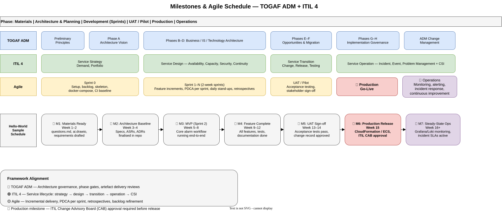

Development Process - Milestones and Operations
Delivery Roadmap
The milestone model connects architecture governance, service management, and incremental delivery. Dates and named technologies in the diagram are illustrative; the durable part is the sequence of evidence-based gates.

{kind=link}
Milestone Detail
| Milestone | Outcome | Evidence to advance |
|---|---|---|
| M1 - Materials ready | The delivery context and source information are available. | Materials inventoried, owners identified, initial requirements drafted |
| M2 - Architecture baseline | The intended structure and significant trade-offs are understood. | Architecture views, decisions, risks, and non-functional requirements reviewed |
| M3 - Minimum viable increment | A thin end-to-end workflow demonstrates feasibility. | Working path, focused tests, deployment skeleton, early review evidence |
| M4 - Feature complete | Planned scope is implemented and integrated. | Requirement coverage, complete tests, current documentation, resolved blockers |
| M5 - Acceptance complete | Stakeholders accept behavior and operational readiness. | Acceptance results, security and compliance evidence, known-issue decision |
| M6 - Production release | The accepted version is deployed through controlled release. | Approval, immutable version, rollback plan, deployment and health results |
| M7 - Steady-state operations | The service is monitored, supported, and continuously improved. | Service ownership, alerts, response procedures, objectives, improvement backlog |
Framework Alignment
Architecture governance
Architecture work establishes principles and a baseline early, then continues through implementation governance and controlled change. Decisions remain connected to delivery rather than ending after initial design.
Service management
Service strategy and design inform requirements; transition governs testing and release; operations provide incident, event, and performance feedback for continued improvement.
Agile delivery
Short iterations produce testable increments. Each sprint uses the same PDCA logic: plan a bounded outcome, implement it, inspect evidence, and adapt the backlog and working method.
Production and Operations
A successful deployment is a transition into measured operation, not the final step of development.
Release verification
- Confirm the deployed version and configuration.
- Run health, smoke, and critical-path checks.
- Verify monitoring, alert routing, and dashboards.
- Keep rollback criteria and responsibility explicit during the observation window.
Continuous improvement
- Turn incidents and recurring support work into prioritized improvement items.
- Compare observed reliability, performance, and usage with the planned objectives.
- Update requirements and architecture decisions when operating assumptions change.
- Feed lessons into the next milestone or sprint planning cycle.